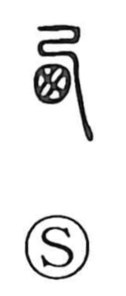

西

Uncategorized
Kun: nishi | On: sei, sai
west ・ western direction
Explanation
In the oracle-bone and bronze scripts, 西 depicts the coarse wickerwork texture of a basket and, more specifically, the form of a bird’s nest. This original picture is echoed in 巣, where the same enclosed, field-like shape serves as the nest set upon a tree, with the chicks’ heads shown in a row. The use of 西 for the cardinal direction ‘west’ arose later by phonetic loan, independent of the nest imagery.